Tarjeta NFC + Perfil digital
Tarjetas de presentación digital NFC
Comparte tu contacto, WhatsApp, redes y perfil digital con una tarjeta NFC personalizada y código QR, lista para usar.
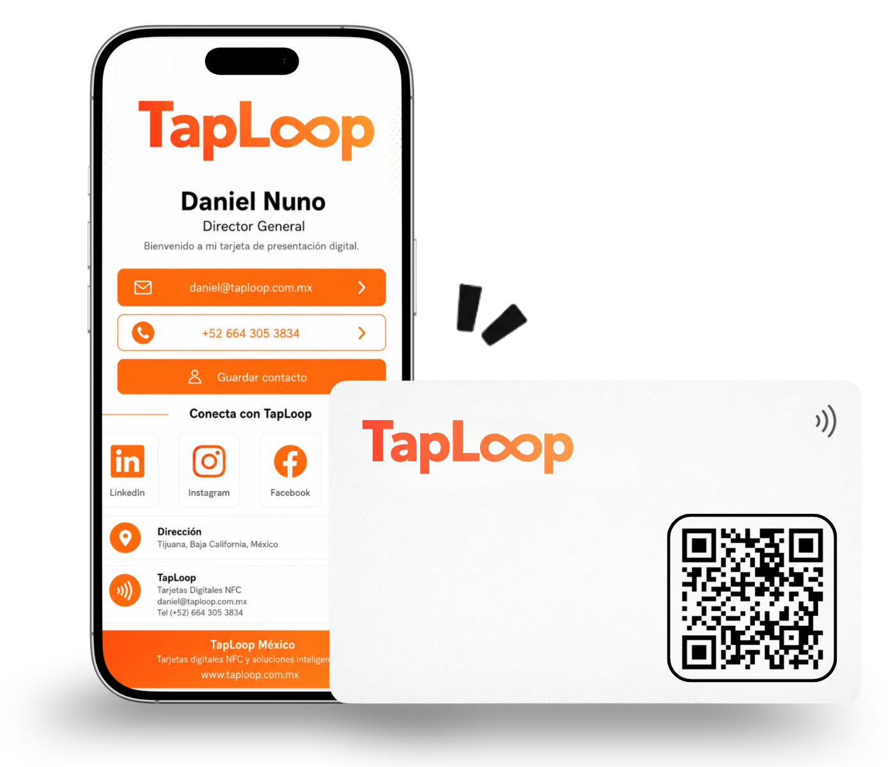
Elige una tarjeta de presentación digital NFC en PVC o metal, personalizada para compartir tu información profesional.
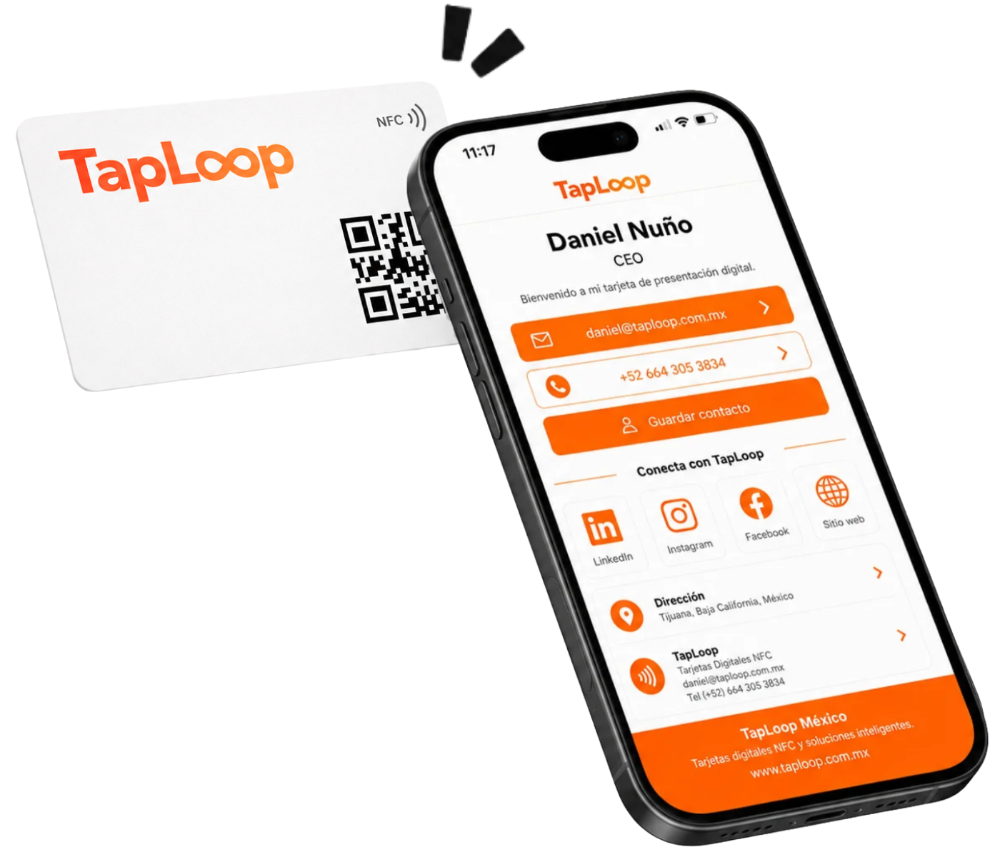
Ideal para equipos, colaboradores y uso corporativo.
Ver producto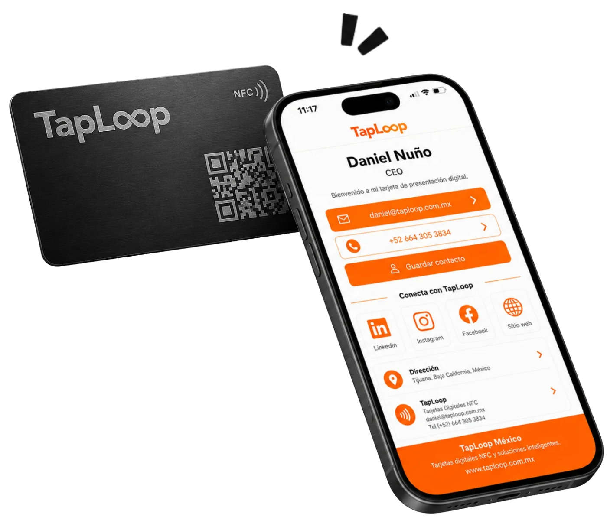
Ideal para directivos, gerentes, socios o presentaciones premium.
Ver productoDiseñamos, programamos y enviamos tus tarjetas NFC listas para usar.
Logo, datos de contacto, enlaces y cantidad de tarjetas.
Iniciar mi propuestaRecibes 2 propuestas originales de tarjeta NFC y perfil digital.
Pulimos el diseño contigo hasta dejarlo listo para producción.
Programamos, probamos y enviamos tus tarjetas listas para usar.
Comparte tu contacto, WhatsApp y redes con una tarjeta NFC metálica premium.
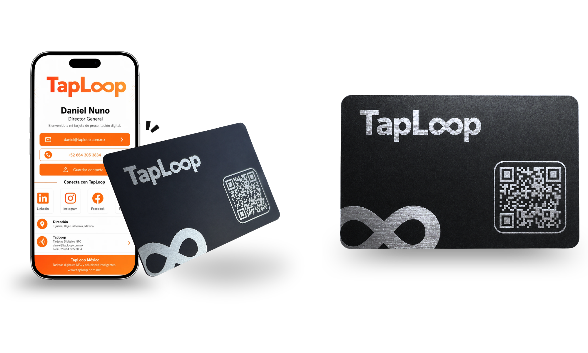
Comparte tu contacto, WhatsApp y redes con una tarjeta de presentación digital NFC personalizada.
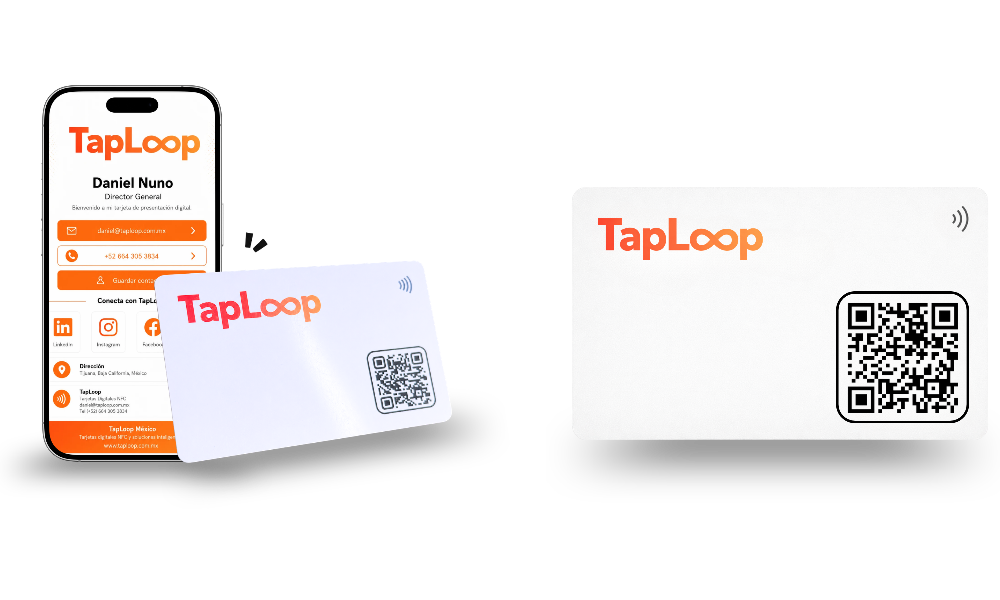
Tarjetas NFC
Presenta a cada colaborador con una tarjeta NFC y un perfil digital personalizado, manteniendo una imagen consistente para toda la empresa.
Cada miembro cuenta con su propio perfil digital, contacto, WhatsApp, redes y enlaces.
Mantenemos una imagen visual consistente para todo tu equipo o empresa.
Diseñamos, programamos, probamos y enviamos tus tarjetas listas para compartir.
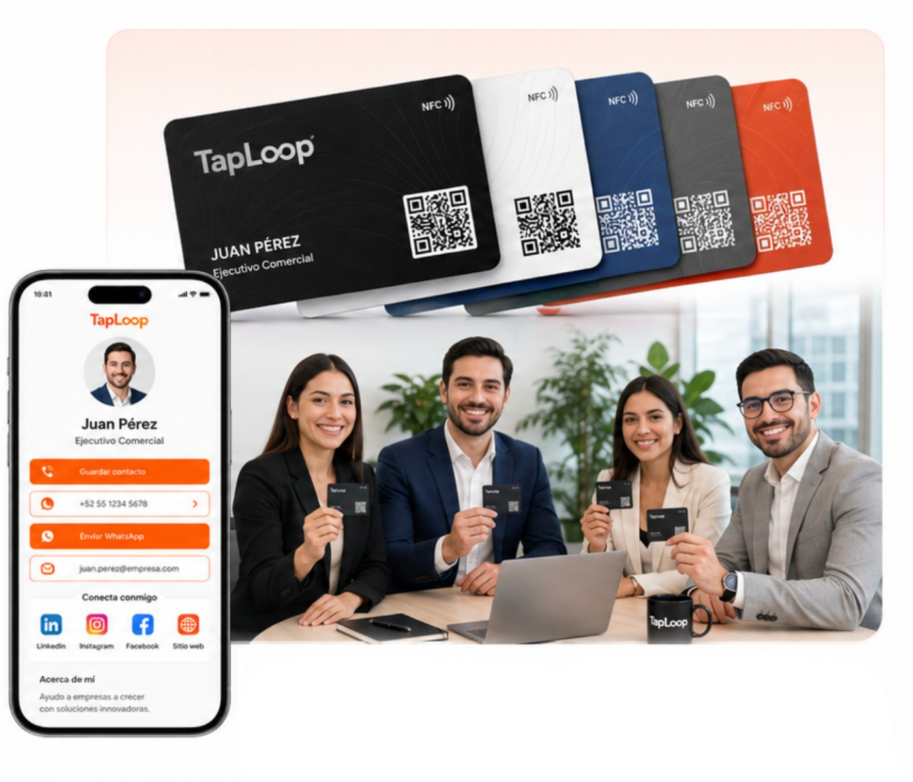
Personalizada con tu marca y datos. Sin plantillas.
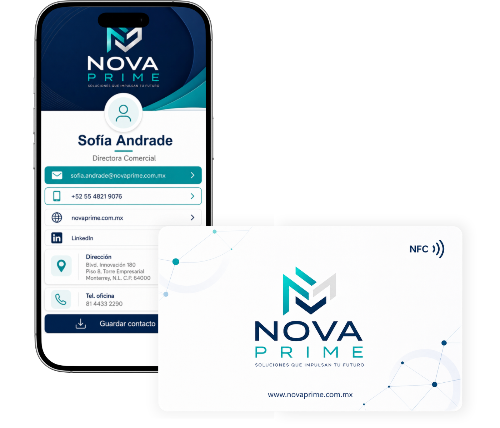
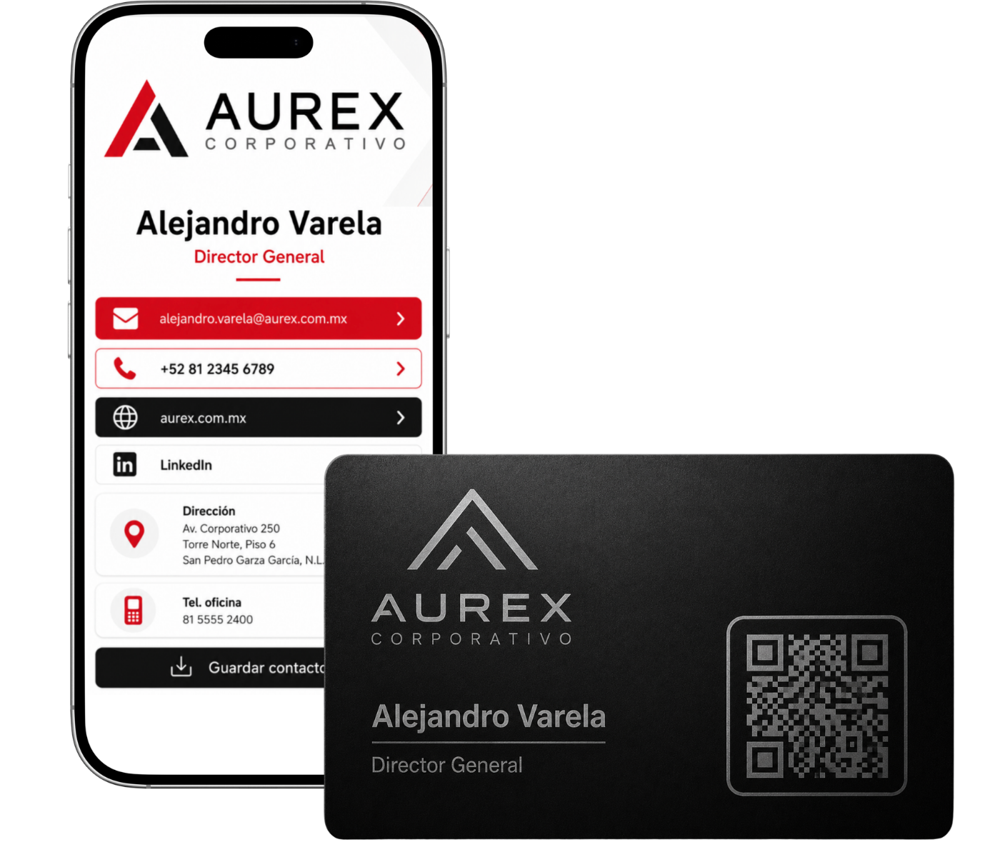
Cada solución incluye diseño personalizado, perfil digital y acompañamiento de nuestro equipo.
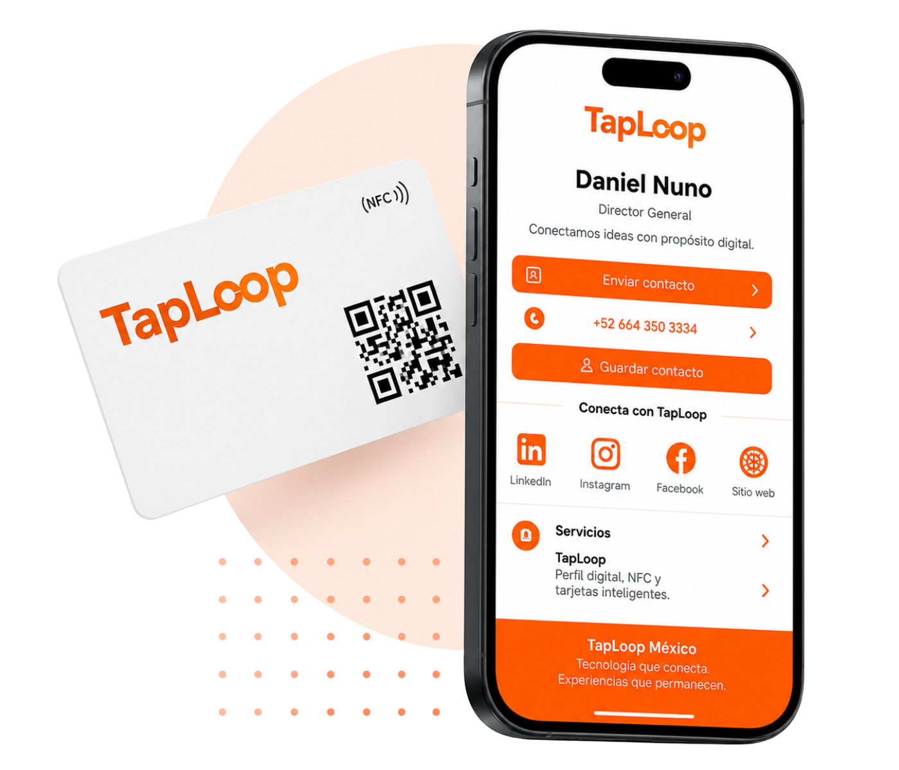
Creamos tu tarjeta y perfil digital según tu marca, sin plantillas genéricas.
Comparte contacto, WhatsApp, redes y enlaces desde una página personalizada.
Programamos, probamos y entregamos tus tarjetas listas para compartir.
Nuestro equipo te guía desde la idea inicial hasta la entrega final.
Profesionales y empresas han confiado en TapLoop para crear sus tarjetas NFC y perfiles digitales.

"Trabajo en inmobiliaria y me funcionó desde la primera semana. Acerco la tarjeta y el cliente ya tiene WhatsApp, ubicación y mi contacto guardado."
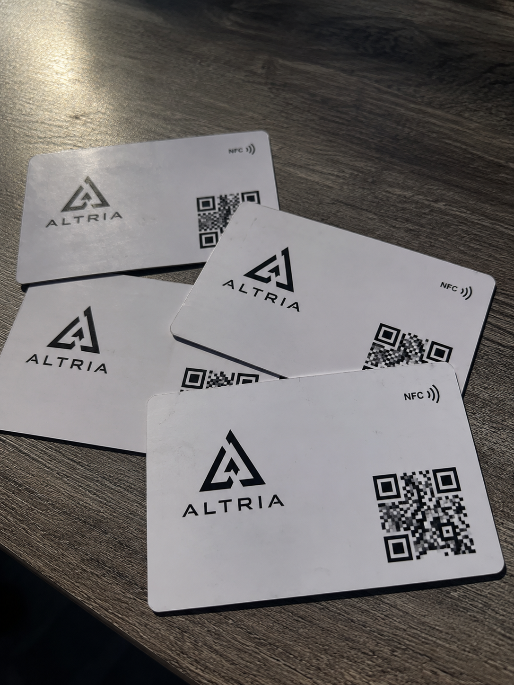
"Llevamos más de 2 años con estas tarjetas en el equipo comercial. Si cambia un número, editamos el perfil y listo."

"Mis pacientes abren ubicación, Instagram y agenda sin estar buscando enlaces. Se ve mucho más profesional."
Resolvemos las dudas más comunes sobre nuestras tarjetas NFC y perfiles digitales.
Es una tarjeta física con chip NFC y código QR que abre un perfil digital para compartir contacto, WhatsApp, redes sociales, sitio web y otros enlaces.
No. La tarjeta funciona con NFC o QR desde dispositivos compatibles, sin necesidad de instalar una app.
Incluye tarjeta personalizada, chip NFC programado, código QR y perfil digital según la solución elegida.
Sí. Dependiendo de la solución contratada, puedes actualizar tus datos y enlaces sin reemplazar la tarjeta.
Sí. Creamos un diseño corporativo y personalizamos los datos de cada colaborador.
El tiempo depende de la cantidad, material y aprobación final del diseño. Se confirma en cada cotización.
Nuestro equipo te ayuda a elegir la mejor opción.
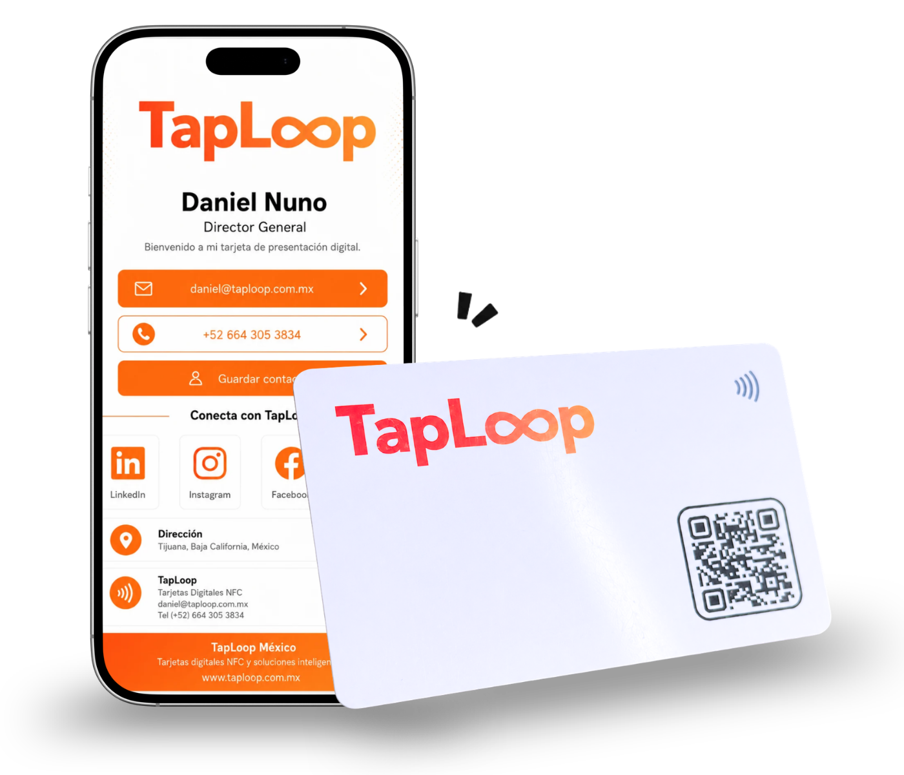
Cuéntanos cuántas necesitas y nuestro equipo te prepara una propuesta personalizada.